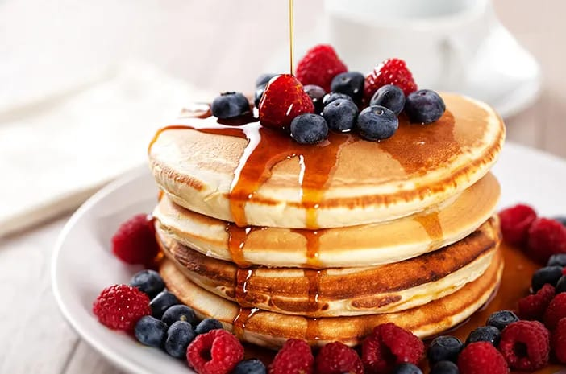
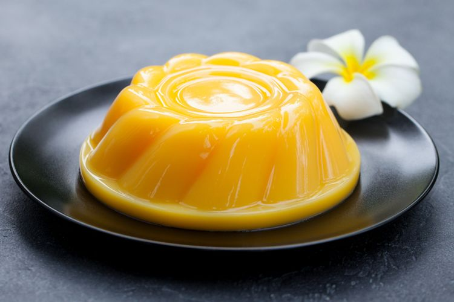

Resep Makanan Penutup
Panduan Memasak
Home
Makanan
Minuman
Dessert
About Us
Puding Cheesecake
Bahan-bahan:
200 gram biskuit marie
100 gram mentega
200 gram cream cheese
100 gram gula pasir
200 ml whipped cream
1 sachet agar-agar
500 ml air
Cara Membuat:
Hancurkan biskuit marie dan campur dengan mentega, lalu tekan ke dasar cetakan.
Kocok cream cheese, gula, dan whipped cream hingga halus.
Masak agar-agar dengan air hingga mendidih, lalu campurkan ke adonan cream cheese.
Tuang adonan ke atas biskuit dan dinginkan di kulkas hingga mengeras.

Pancake
Bahan-bahan:
200 gram tepung terigu
2 butir telur
200 ml susu
2 sdm gula pasir
1 sdt baking powder
1 sdt vanili
Minyak untuk menggoreng
Cara Membuat:
Campurkan semua bahan dalam mangkuk, aduk hingga rata.
Panaskan sedikit minyak di wajan, tuang adonan pancake.
Masak hingga muncul gelembung, balik dan masak hingga kecokelatan.

Puding
Bahan-bahan:
1 sachet agar-agar
500 ml susu
100 gram gula pasir
1 sdt vanili
Buah-buahan sesuai selera
Cara Membuat:
Masak agar-agar, susu, gula, dan vanili hingga mendidih.
Tuang ke dalam cetakan yang sudah diisi buah-buahan.
Dinginkan di kulkas hingga mengeras.
Brownis Coklat
Bahan-bahan:
200 gram coklat batang
150 gram mentega
200 gram gula pasir
3 butir telur
100 gram tepung terigu
1 sdt vanili
Cara Membuat:
Lelehkan coklat dan mentega, aduk hingga rata.
Campurkan gula, telur, dan vanili, aduk rata.
Tambahkan tepung terigu, aduk hingga tidak ada gumpalan.
Tuang adonan ke dalam loyang dan panggang selama 30 menit.
Salad Buah Jelly
Bahan-bahan:
Buah-buahan segar (melon, semangka, anggur)
1 sachet jelly
500 ml air
Gula secukupnya
Cara Membuat:
Masak air dengan gula, lalu tambahkan jelly dan aduk hingga larut.
Potong buah-buahan dan masukkan ke dalam wadah.
Tuang jelly ke atas buah, dinginkan di kulkas.
Waffle
Bahan-bahan:
250 gram tepung terigu
2 butir telur
200 ml susu
100 gram mentega cair
2 sdm gula pasir
1 sdt baking powder
Cara Membuat:
Campurkan semua bahan, aduk hingga rata.
Panaskan cetakan waffle dan olesi dengan mentega.
Tuang adonan ke dalam cetakan, tutup, dan masak hingga matang.
Kolak Pisang
Bahan-bahan:
200 gram pisang, potong-potong
100 gram kolang-kaling
500 ml santan
100 gram gula merah
1 sdt vanili
Cara Membuat:
Rebus santan dan gula merah hingga mendidih.
Tambahkan pisang dan kolang-kaling, masak hingga matang.
Angkat dan sajikan hangat.
Kue Lumpur
Bahan-bahan:
200 gram tepung terigu
2 butir telur
250 ml santan
100 gram gula pasir
1 sdt baking powder
Cara Membuat:
Campurkan semua bahan, aduk hingga rata.
Tuang ke dalam cetakan kue, kukus selama 30 menit.
Kue Lapis
Bahan-bahan:
250 gram tepung beras
200 ml santan
150 gram gula pasir
1 sdt pasta pandan
Cara Membuat:
Campurkan semua bahan, aduk rata.
Tuang sedikit adonan ke dalam cetakan, kukus hingga matang.
Tuang lapisan berikutnya dan kukus lagi, ulangi hingga adonan habis.
Putu
Bahan-bahan:
200 gram tepung ketan
150 ml air
100 gram gula merah, serut halus
Daun pandan secukupnya
Cara Membuat:
Campurkan tepung ketan dengan air hingga kalis.
Ambil sedikit adonan, masukkan gula merah di tengahnya, bulatkan.
Siapkan cetakan yang dialasi daun pandan, masukkan bola-bola adonan, kukus selama 20 menit.
Resep Pudding Cheesecake
Suka
Favorit
Resep Pancake
Suka
Favorit
Resep Brownis Coklat
Suka
Favorit
Resep Salad Buah Jelly
Suka
Favorit
Resep Waffle
Suka
Favorit
Resep Kolak Pisang
Suka
Favorit
Resep Kue Lumpur
Suka
Favorit
Resep Kue Lapis
Suka
Favorit
Resep Kue Putu
Suka
Favorit
Resep Pudding
Suka
Favorit
Total Likes:
0
Resep Favorit Saya: